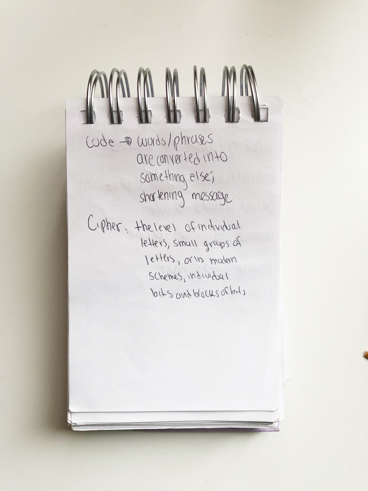

BEHIND THE CODEBOOK
While debating on what type of Code Book I wanted
to create, it was
important for me to learn the
difference between a Code and
a Cipher. In the book Code Girls,
the author elaborated the differences.
To keep the differences in mind,
I decided to write it in my notepad.

After writing down the difference between a Code and Cipher, I began to write my functional requirements. For each letter, Lowercase and Uppercase, I wanted for it to be ciphered. For words, phrases, Special Characters, and Numbers , I wanted for that to be coded.
For inspiration for my cipher, I decided to look at ciphers used in the past.
Francis Bacon
created a substitution cipher where each letter was turned
into 5 character groups. I decided to use this method of ciphering for individual
Uppercase and Lowercase letters.
I decided to use the authors name: Liza Mundy as a base. As shown below,
for the letter A, I used the letter L (first letter in her first name) as a place holder
for four characters and the fifth character is an M (first letter in her last name).